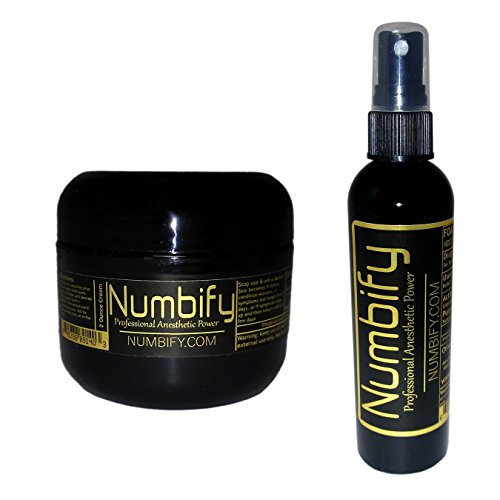
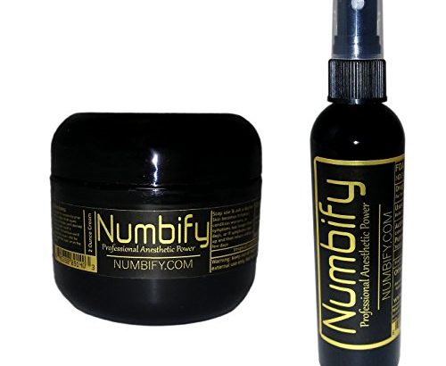
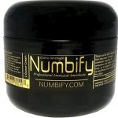

When You Have the Best / Strongest Numbing Cream, You Have the Conviction to Stand Alone – So Be It!

Hi everyone, Drew Steig here, CEO of Pain Relief Naturally, the company that produces Numbify brand numbing products.I have spent a good portion of time over the last few months researching a phenomenon that is insanely difficult for me to wrap my head around.I attended a meeting this week where our analyst went through an excruciatingly long report detailing exactly how many of our competitors in the market place were using fake reviews.Out of the entire category of numbing products there were only 3 (including us) that we could find who were not using any fake reviews.This is a stark contrast to 4-5 years ago when we first entered the Amazon selling space, when only a few companies had fake reviews, and they were pretty skeevy so we deemed them not a huge risk.
As we discussed the issue with our analyst, we asked him why he thought that fake reviews were so prevalent in our industry, and his answer pointed us towards one defining incident.It started with Ebanel laboratories.Ebanel is listed as the number one selling numbing product on Amazon.He described their business practices as so abhorrent that even Walmart of all places refuses to work with them.When they entered the space a few years ago, they began by slowly but surely adding a few fake reviews a day until their reviews numbered in the thousands.
In the numbing space it is incredibly difficult to get reviews of any kind, positive or negative.It is a slow and excruciating process that happens maybe at a pace of 2-5 reviews a month.There is no possible way to get that level of reviews, even with a game changing product.Blind side-by-side testing of Ebanel’s numbing products shows them to be inferior to almost every other product on the market.They NEEDED those fake reviews just to keep up with products like Numbify.This isn’t all that surprising, Ebanel has long been a purveyor of review fraud on Amazon – they saw an opportunity in the numbing market to replicate their success, pushed out a poor product, and boosted the unethical advertising revenue – right into the pockets of the review farms.
Once Ebanel started pushing out these fake reviews, we believe, they also started attacking their competitors.Putting negative fake reviews on their products was the final straw for many in our field.A war began, fake negative reviews flying all over the place, and fake positive reviews piling up on themselves.It quickly became a mess with advertisers in even some of the most historically trustworthy brands like Aspercreme, Blue Emu and Preparation H showing up in the study providing fake reviews.I will admit that even I wavered a small amount when I heard that.If established brands like those felt they couldn’t keep up without fake reviews, what chance do we– a relative newcomer– have of sticking this out?
It was suggested in our meeting that since all of our competitors are going down this road, that perhaps we should too.Maybe there just isn’t a way to compete without the fake reviews, at least not on Amazon.I was asked if we wanted to change direction and follow the pack.Statistics were discussed, if everyone is doing it then the risk of getting caught is minimal.How can we keep up when almost ALL of our competitors are sinking to this level?My response to them was the same response I have given before.NO!
No we will not sacrifice our integrity for an easy win!No we will not sink to the level of companies that plaster their competitors with lies and deceit!No we will not engage with and financially support the illegal activities of review farms that make a living defrauding American consumers!
Numbify has been shown time and time again in blind side-by-side testing to be the most effective numbing agent on the market.It’s so good that despite the fake negative reviews (put on us because we call out this fraud, which only enrages and angers these cheaters more), we still manage to keep products on the 1st and 2nd pages of search results on Amazon.We gain more and more very loyal buyers every day, because of our stand, and because we provide a superior product.Time and time again our clients come back, no matter how many fake negative reviews are put on us.
Someone has to stand up and say 'It stops with me!'And if no-one else will, I will.It stops with me.It stops with Numbify.It stops with our company!The way to become an industry leader is through integrity and commitment to quality!As long as I hold the reins you can trust that every positive review that our products receive was earned legitimately.We will not cast aside our principles because things got hard.I truly believe that Numbify is the best that there is.We have spent an extraordinary amount of time and money perfecting our products, and anytime we find a way to make it better we do so, despite the expense.This is the way to become an industry leader, this is the way to stand side-by-side with the fraudulent companies and outsell them despite their massive amounts of fake reviews.People who have tried us know that if they want a great numbing product (regardless of the reviews), they can get it from us.I give a special thank you to all of our loyal customers who keep us at the top despite all the fraudulent sellers in the industry.
These frauds will not stop until the people rise up and say 'Enough!We will only buy from honest companies.'So if you want an honest product, check out Numbify.com – The numbing product so good that our competitors have to use fake reviews just to keep up with us!!!
[bsa_pro_ad_space id=4]
Project Management Institute (PMI®) takes into consideration the feedback shared by numerous stakeholders and postpones the PMP® certification exam change to June 2020.The new exam outline will come into effect from 1st July 2020.In an earlier announcement by PMI, which came in June 2019, PMP examination was set to change from 15th December 2019.While the current PMP examination has 5 domains: Initiating, Planning, Executing, Monitoring and Controlling, and Closing, the new PMP® exam outline will be set around 3 domains: People, Process and Business Environment.
However, the change was met with feedback from various stakeholders mentioning that they need more time to adjust to the new examination change.PMI has finally decided to take heed to the feedback.Earlier today, PMI has released a notice through its website, PMI.org notifying that they have finally decided to postpone the exam outline change date.You can read more about the announcement at PMP® Exam Change is Moving to June 2020.
What triggered the change?
PMI keeps an eye on the project management spectrum and conducts researches every 3 to 4 years to identify the current trends in project management spectrum, the requirement of professionals and improved ways to facilitate learning to project managers.In association with several industry experts, PMI had conducted the last set of researches in the year 2015 and has made an attempt to address the current need through the new PMP exam content outline.
What is new in the changed PMP® Exam?
While the PMP examination is set to change from July 1st, 2020, the PMBOK® V7 is set to release in 2021.This leaves the professionals preparing for PMP examination in a tricky situation.With the new exam outline, there are sections that are brand new to the examination and might not be available in PMBOK® V6 exam guide as well.PMI has promised the release of multiple documents that will help training providers and in turn the candidates to prepare for the new examination.As of now, PMI had released a mapping document that will help determine which inventory can be reused for PMP exam post 30th June 2020.
If you want to explore the changes that have been made in the new PMP exam outline, here is a good reed for you: What has changed in the new PMP Exam content outline?
People: The current PMP certification courses may have limited information of this section and whatever information is present may be woven throughout the course.42% of the questions of the new PMP exam will be from this domain.
Process: This forms the major part of the previous structure and there would be abundant availability of this domain in all of the existing PMP® training course content.This will also form 50% of the questions in the new PMP examination.
Business Environment: This is another new domain and the availability of this domain will be less in the current courses and would be woven throughout the course.8% of the questions in the new PMP exam will be from this section.
We at CP will keep you updated with all the advancements in the PMP exam change.If you are planning to take up PMP certification before the release of the new exam outline becomes effective, we can help you as well.We are running multiple 4-days PMP® Bootcamp every month.We believe in quality and are committed to connecting you to the best PMP training solutions.Happy Learning!
[bsa_pro_ad_space id=4]
Share on Facebook Tweet Follow us
Posted On: 2019-08-31T00:00:00







Content Date: 2019-08-31
Download Date: 2021-07-09
Document ID: L0C04DR4T